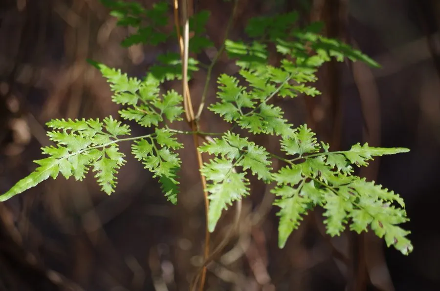

蕨类与裸子植物 · 植物界
海金沙 Lygodium japonicum

海金沙是一种攀援蕨类，细长的叶轴能缠绕攀爬，孢子粉金黄如沙，中药称“海金沙”，常用于治疗淋证。
- 分类
- 门蕨类植物门纲水龙骨纲目莎草蕨目科海金沙科属海金沙属
- 栖息环境
- 山坡灌丛、溪边、林缘与石壁，喜温暖湿润和充足光照
- 地理分布
- 中国长江以南各地及东亚、东南亚地区
- 保护级别
- 暂无评估；野生种群常见
物种志
海金沙是海金沙科的攀援蕨类，不是草本也不是藤本，而是以细长、柔韧的叶轴缠绕攀援。叶为二回羽状复叶，羽片掌状，小叶三角形或卵状披针形，边缘有细齿；叶轴可长数米，能攀附在灌木、石壁和围栏上生长。能育叶的小羽片边缘生有穗状孢子囊，孢子成熟时呈金黄色粉末状，即中药“海金沙”。
海金沙喜温暖湿润、光照充足的环境，常生于山坡灌丛、溪边、林缘与石壁上，在南方是常见的攀援植物。它以孢子繁殖，孢子细如粉末，随风传播；根状茎也横走于浅土中。孢子粉入药称“海金沙”，有利尿通淋、清热利湿之效，常用于泌尿系统结石与淋证。叶片优美、攀援力强，也可作绿篱与棚架绿化材料。它在东亚与东南亚分布广泛。
形态与习性
- 习性攀援蕨类，叶轴可长数米
- 叶二回羽状复叶，小叶掌状排列
- 孢子金黄色粉末状
- 药用孢子粉入药称“海金沙”
- 功效利尿通淋、清热利湿
- 用途药用，也可作绿篱与棚架绿化
趣味知识
- 海金沙不是草本，而是靠细长叶轴缠绕攀爬的攀援蕨类。
- 它的孢子粉金黄细如沙，中药“海金沙”就是这些孢子。
- 海金沙的叶轴很柔韧，能爬满一面石墙或围栏。